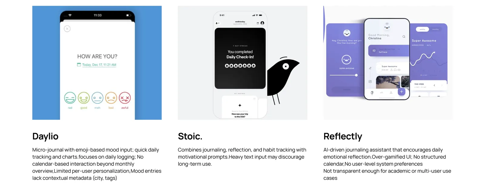
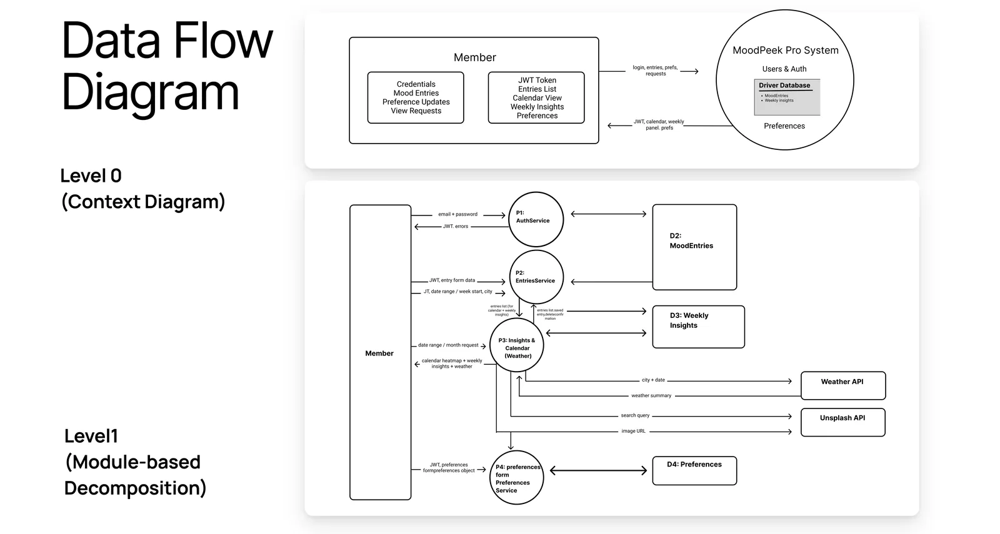
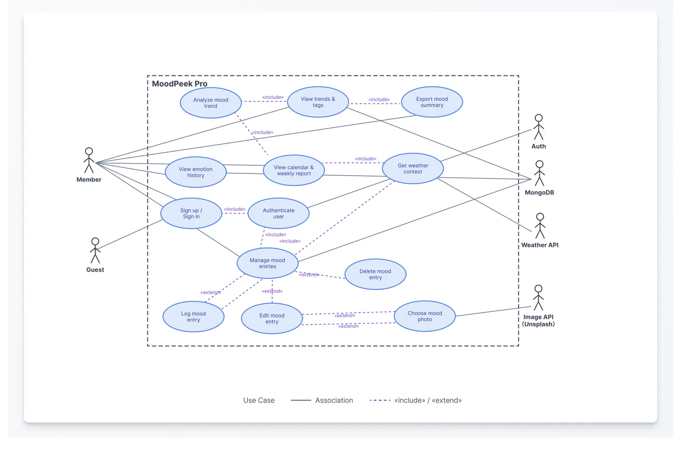
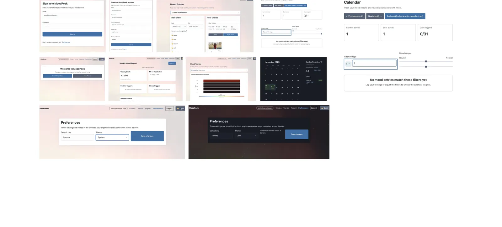
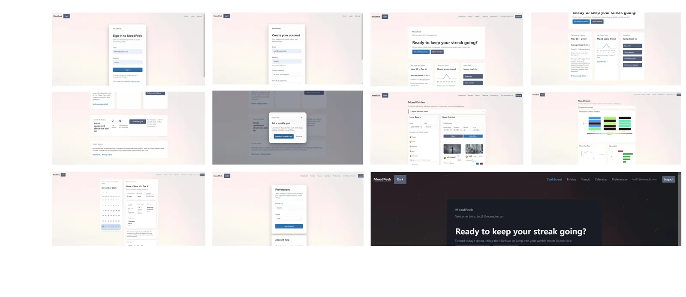
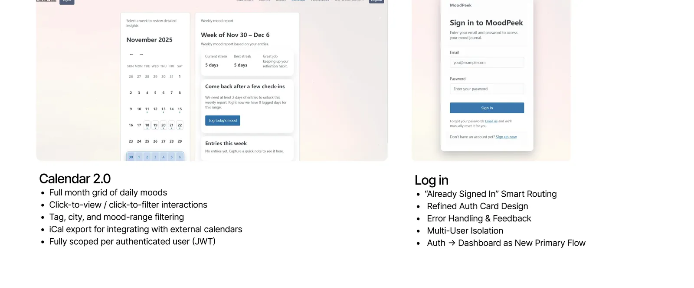
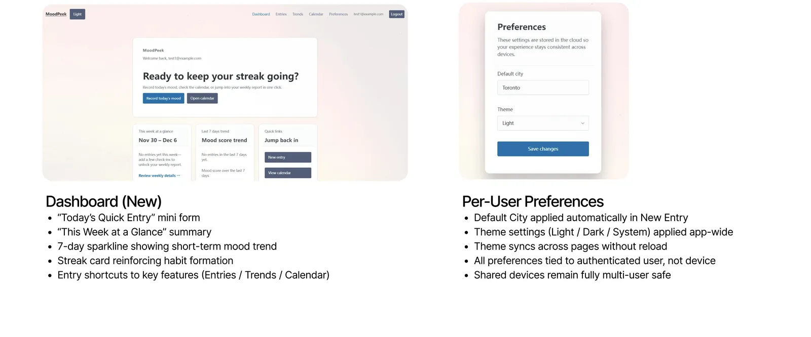
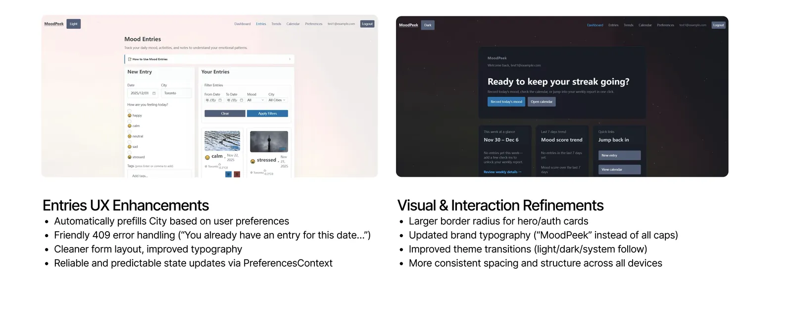

Background背景背景背景ContexteHintergrund
MoodPeek Pro is for people who want to build a daily mood-logging habit and see their moods over time, with as little effort as possible.
MoodPeek Pro 面向想养成每天记录心情的习惯、并能随时间回看情绪的人，记录过程要尽量省力。
MoodPeek Pro 面向想養成每天記錄心情的習慣、並能隨時間回看情緒的人，記錄過程要盡量省力。
MoodPeek Pro は、気分を毎日記録する習慣をつけ、時間の流れの中で振り返りたい人のためのアプリです。記録の手間はできるだけ小さくしています。
MoodPeek Pro s’adresse à celles et ceux qui veulent prendre l’habitude de noter leur humeur chaque jour et la relire dans le temps, avec le moins d’effort possible.
MoodPeek Pro ist für Menschen, die täglich ihre Stimmung festhalten und sie über die Zeit verfolgen wollen, mit möglichst wenig Aufwand.
Mood apps record how people feel, but rarely help them see why情绪类应用记录了感受，却很少帮人看清原因情緒類應用記錄了感受，卻很少幫人看清原因気分アプリは感情を記録するが、その理由まではほとんど見せてくれないLes applis d’humeur notent ce qu’on ressent, rarement pourquoiStimmungs-Apps halten Gefühle fest, zeigen aber selten, warum
Emotion-tracking tools record how people feel but rarely explain why: they leave out environment, time and atmosphere. The first MoodPeek answered this by pairing each mood entry with live weather from Open-Meteo and showing entries as color-coded cards. It ran in guest mode, with no accounts.
情绪追踪工具记录人的感受，却很少解释原因：环境、时间和氛围都被忽略了。第一版 MoodPeek 的回答是：把每条心情记录和 Open-Meteo 的实时天气配在一起，用颜色编码的卡片呈现。它以访客模式运行，没有账号。
情緒追蹤工具記錄人的感受，卻很少解釋原因：環境、時間和氛圍都被忽略了。第一版 MoodPeek 的回答是：把每條心情記錄和 Open-Meteo 的即時天氣配在一起，用顏色編碼的卡片呈現。它以訪客模式執行，沒有帳號。
感情を記録するツールは、気分は残しても理由はほとんど説明せず、環境、時間、雰囲気が抜け落ちています。初代 MoodPeek は、気分の記録ごとに Open-Meteo のリアルタイムの天気を組み合わせ、色分けしたカードで表示することでこれに応えました。ゲストモードで動き、アカウントはありませんでした。
Les outils de suivi émotionnel notent ce qu’on ressent mais en expliquent rarement la cause : ils laissent de côté l’environnement, le moment et l’ambiance. Le premier MoodPeek y répondait en associant chaque humeur à la météo en direct d’Open-Meteo et en l’affichant sur des cartes colorées. Il fonctionnait en mode invité, sans comptes.
Tools zum Erfassen von Gefühlen halten fest, wie man sich fühlt, erklären aber selten warum: Umgebung, Zeit und Stimmung fehlen. Das erste MoodPeek verband jeden Eintrag mit Live-Wetter von Open-Meteo und zeigte ihn als farbcodierte Karte. Es lief im Gastmodus, ohne Konten.
Three gaps held the first version back第一版有三个结构性缺口第一版有三個結構性缺口初版には 3 つの構造的な欠けがあったTrois manques freinaient la première versionDrei Lücken bremsten die erste Version
- No time-based structure没有时间结构沒有時間結構時間の構造がないPas de structure dans le tempsKeine zeitliche StrukturMoods could be entered, but there was no way to see time, patterns or seasonal cycles可以录入心情，却看不到时间、规律和季节性的变化可以輸入心情，卻看不到時間、規律和季節性的變化気分は入力できても、時間やパターン、季節の周期が見えないOn pouvait saisir son humeur, sans voir le temps, les motifs ou les cycles saisonniersStimmungen ließen sich eintragen, aber Zeit, Muster und Jahreszyklen blieben unsichtbar
- No per-user settings没有按用户区分的设置沒有按使用者區分的設定ユーザーごとの設定がないPas de réglages par utilisateurKeine Einstellungen pro NutzerTheme and default city belonged to the device, so a shared computer mixed people’s settings主题和默认城市跟着设备走，共用一台电脑时，不同人的设置会混在一起主題和預設城市跟著裝置走，共用一台電腦時，不同人的設定會混在一起テーマと既定の都市が端末単位なので、共用のパソコンでは人ごとの設定が混ざるLe thème et la ville par défaut dépendaient de l’appareil : sur un ordinateur partagé, les réglages se mélangeaientDesign und Standardstadt hingen am Gerät, auf einem geteilten Computer vermischten sich die Einstellungen
- No habit feedback没有习惯反馈沒有習慣回饋習慣へのフィードバックがないPas de retour sur l’habitudeKein Feedback zur GewohnheitNo streaks, weekly summaries or dashboard insights, so there was little reason to come back没有连续记录、周总结和仪表盘洞察，回来使用的理由很少沒有連續記錄、週總結和儀表板洞察，回來使用的理由很少連続記録も週のまとめもダッシュボードの気づきもなく、戻ってくる理由が乏しいNi séries, ni résumés hebdomadaires, ni tableau de bord : peu de raisons de revenirKeine Serien, Wochenzusammenfassungen oder Dashboard-Einblicke, also wenig Grund zurückzukommen
It is for people building a daily habit, including on shared computers它面向正在养成每日习惯的人，包括共用电脑的人它面向正在養成每日習慣的人，包括共用電腦的人毎日の習慣をつくりたい人、共用パソコンを使う人のためのアプリElle s’adresse à qui prend une habitude quotidienne, y compris sur un ordinateur partagéSie ist für Menschen, die eine tägliche Gewohnheit aufbauen, auch an geteilten Computern
The primary audience is people trying to build a daily mood-logging habit, students and young professionals managing stress, and people who share a family computer and need settings that stay their own. Most are comfortable with calendars and simple charts but new to streaks, weekly summaries and data trends, so they need clear defaults and gentle guidance.
主要用户是想养成每日记录心情习惯的人、正在调节压力的学生和职场新人，以及共用家庭电脑、需要设置互不干扰的人。他们大多熟悉日历和简单图表，但对连续记录、周总结和数据趋势还比较陌生，所以需要清楚的默认值和温和的引导。
主要使用者是想養成每日記錄心情習慣的人、正在調節壓力的學生和職場新人，以及共用家庭電腦、需要設定互不干擾的人。他們大多熟悉日曆和簡單圖表，但對連續記錄、週總結和資料趨勢還比較陌生，所以需要清楚的預設值和溫和的引導。
主な対象は、気分を毎日記録する習慣をつけたい人、ストレスと向き合う学生や若手社会人、そして家族のパソコンを共用し、自分だけの設定が必要な人です。多くはカレンダーや簡単なグラフには慣れていますが、連続記録や週のまとめ、データの傾向には不慣れなので、分かりやすい既定値とやさしい案内が必要です。
Le public principal : les personnes qui veulent noter leur humeur chaque jour, les étudiants et jeunes actifs qui gèrent leur stress, et celles et ceux qui partagent un ordinateur familial et veulent garder leurs propres réglages. La plupart connaissent les calendriers et les graphiques simples, mais découvrent les séries, les résumés hebdomadaires et les tendances : il leur faut des valeurs par défaut claires et un guidage doux.
Die Hauptzielgruppe: Menschen, die täglich ihre Stimmung festhalten wollen, Studierende und Berufseinsteiger, die mit Stress umgehen, und alle, die einen Familiencomputer teilen und eigene Einstellungen brauchen. Die meisten kennen Kalender und einfache Diagramme, sind aber neu bei Serien, Wochenzusammenfassungen und Datentrends; sie brauchen klare Standardwerte und sanfte Führung.
The idea: every mood on one calendar, from day to week to month核心想法：所有心情都放在一个日历里，从日到周到月核心想法：所有心情都放在一個日曆裡，從日到週到月発想：すべての気分をひとつのカレンダーに、日から週、月へL’idée : toutes les humeurs dans un seul calendrier, du jour à la semaine au moisDie Idee: alle Stimmungen in einem Kalender, vom Tag über die Woche zum Monat
Research on affective computing suggested that emotion has structure and changes in recognizable patterns, which makes a mood log time-based data. The redesign reorganized MoodPeek around one time model, day to week to month, so daily entries, weekly summaries and monthly patterns all live in the calendar.
情感计算的研究表明，情绪有结构，会按可辨认的规律变化，所以心情记录本质上是按时间排列的数据。改版把 MoodPeek 重新组织在“日、周、月”这一个时间模型上，每天的记录、每周的总结和每月的规律都放进日历里。
情感計算的研究顯示，情緒有結構，會按可辨認的規律變化，所以心情記錄本質上是按時間排列的資料。改版把 MoodPeek 重新組織在「日、週、月」這一個時間模型上，每天的記錄、每週的總結和每月的規律都放進日曆裡。
感情コンピューティングの研究から、感情には構造があり、認識できるパターンで変化することが分かります。つまり気分の記録は時間に沿ったデータです。改版では MoodPeek を「日、週、月」というひとつの時間モデルで組み直し、毎日の記録、週のまとめ、月のパターンをすべてカレンダーに収めました。
Les travaux sur l’informatique affective suggèrent que l’émotion a une structure et change selon des motifs reconnaissables : un journal d’humeur est donc une donnée temporelle. La refonte a réorganisé MoodPeek autour d’un seul modèle de temps, du jour à la semaine au mois, pour que les saisies, les résumés hebdomadaires et les motifs mensuels vivent tous dans le calendrier.
Die Forschung zu Affective Computing legt nahe, dass Gefühle eine Struktur haben und sich in erkennbaren Mustern ändern; ein Stimmungsprotokoll ist also zeitbasierte Daten. Die Überarbeitung ordnete MoodPeek um ein Zeitmodell, Tag, Woche, Monat, sodass Tageseinträge, Wochenzusammenfassungen und Monatsmuster alle im Kalender liegen.
Why it matters: reflection that stays in the person’s hands意义：反思始终由用户自己掌握意義：反思始終由使用者自己掌握意義：振り返りの主導権は本人にあるPourquoi c’est utile : une réflexion qui reste entre les mains de chacunWarum es zählt: Reflexion, die in der eigenen Hand bleibt
Mood tracking can raise self-awareness, but tools that infer emotion automatically can feel intrusive and unreliable. MoodPeek Pro stays fully self-reported, and each account’s data is kept apart with JWT, so a shared device never shows one person’s entries or settings to another. The project plays a role in showing that a mood tool can support awareness and agency without prediction.
记录心情能提升自我觉察，但自动推断情绪的工具容易让人觉得被打扰，也不可靠。MoodPeek Pro 完全由用户自己记录，每个账号的数据用 JWT 隔开，共用设备时也看不到别人的记录和设置。这个项目说明，情绪工具可以在不做预测的前提下，支持觉察和自主。
記錄心情能提升自我覺察，但自動推斷情緒的工具容易讓人覺得被打擾，也不可靠。MoodPeek Pro 完全由使用者自己記錄，每個帳號的資料用 JWT 隔開，共用裝置時也看不到別人的記錄和設定。這個專案說明，情緒工具可以在不做預測的前提下，支持覺察和自主。
気分の記録は自己理解を深めますが、感情を自動で推定するツールは押しつけがましく、当てにならないと感じられがちです。MoodPeek Pro は完全に自己申告で、アカウントごとのデータは JWT で分けられるため、共用端末でも他人の記録や設定は見えません。このプロジェクトは、予測に頼らずに気づきと主体性を支える気分ツールのあり方を示す役割を担っています。
Noter son humeur peut renforcer la conscience de soi, mais les outils qui devinent l’émotion automatiquement paraissent intrusifs et peu fiables. MoodPeek Pro reste entièrement déclaratif, et les données de chaque compte sont séparées par JWT : sur un appareil partagé, personne ne voit les saisies ni les réglages d’un autre. Le projet montre qu’un outil d’humeur peut soutenir la conscience et l’autonomie sans prédiction.
Stimmungen festzuhalten kann die Selbstwahrnehmung stärken, doch Tools, die Gefühle automatisch erkennen wollen, wirken aufdringlich und unzuverlässig. MoodPeek Pro bleibt vollständig selbstberichtet, und die Daten jedes Kontos sind per JWT getrennt; auf einem geteilten Gerät sieht niemand die Einträge oder Einstellungen anderer. Das Projekt zeigt, dass ein Stimmungstool Bewusstsein und Selbstbestimmung stützen kann, ganz ohne Vorhersage.
The intended experience: a quick glance first, detail on demand期望的体验：先看一眼，需要时再深入期望的體驗：先看一眼，需要時再深入目指す体験は、まずひと目、必要なら詳しくL’expérience visée : un coup d’œil d’abord, le détail à la demandeDas Ziel: erst ein kurzer Blick, Details bei Bedarf
Opening the app should answer something at a glance: today’s mood, the current streak and a 7-day sparkline on the Dashboard. Detail comes when the person wants it, by tapping a day or a week in the calendar. Logging takes a few taps, with the city and theme already set.
打开应用，一眼就该得到答案：仪表盘上有今天的心情、当前的连续天数和 7 天迷你走势图。想看细节时，再点日历里的某一天或某一周。记录只需几下点按，城市和主题都已预先设好。
打開應用，一眼就該得到答案：儀表板上有今天的心情、目前的連續天數和 7 天迷你走勢圖。想看細節時，再點日曆裡的某一天或某一週。記錄只需幾下點按，城市和主題都已預先設好。
アプリを開いたら、ひと目で何かが分かるべきです。ダッシュボードには今日の気分、現在の連続記録、7 日間のスパークラインが並びます。詳しく見たいときは、カレンダーの日や週をタップします。記録は数回のタップで済み、都市とテーマはあらかじめ設定されています。
Ouvrir l’appli doit répondre à quelque chose d’un coup d’œil : l’humeur du jour, la série en cours et une courbe sur 7 jours dans le tableau de bord. Le détail vient quand on le veut, en touchant un jour ou une semaine du calendrier. Noter son humeur prend quelques gestes, avec la ville et le thème déjà réglés.
Beim Öffnen soll die App sofort etwas zeigen: die heutige Stimmung, die aktuelle Serie und eine 7-Tage-Sparkline im Dashboard. Details kommen, wenn man sie will, per Tipp auf einen Tag oder eine Woche im Kalender. Ein Eintrag braucht nur wenige Tipps, Stadt und Design sind schon gesetzt.
Why this form: a calendar as the backbone, with calm visuals为什么是这个形态：以日历为骨架，配平静的视觉為什麼是這個形態：以日曆為骨架，配平靜的視覺このかたちの理由：カレンダーを骨格に、穏やかなビジュアルでPourquoi cette forme : le calendrier comme ossature, avec des visuels calmesWarum diese Form: der Kalender als Rückgrat, mit ruhiger Gestaltung
A calendar is a structure people already understand, so it became the main entry point and the anchor for every other view. Following Giorgia Lupi’s data humanism, the visuals stay sparse and gentle: a sparkline over a full analytics page, a short written weekly insight over bar charts, and a calm palette in which blue stands for calm, pink for warmth, deep red for introspection and gray for low energy.
日历是人们本来就熟悉的结构，所以它成了主要入口，也是其他所有视图的锚点。依照 Giorgia Lupi 的“数据人文主义”，视觉保持简洁、温和：用迷你走势图代替完整的分析页，用简短的文字周总结代替柱状图，配色也很平静：蓝色代表平静，粉色代表温暖，深红代表内省，灰色代表低能量。
日曆是人們本來就熟悉的結構，所以它成了主要入口，也是其他所有視圖的錨點。依照 Giorgia Lupi 的「資料人文主義」，視覺保持簡潔、溫和：用迷你走勢圖代替完整的分析頁，用簡短的文字週總結代替長條圖，配色也很平靜：藍色代表平靜，粉色代表溫暖，深紅代表內省，灰色代表低能量。
カレンダーは誰もがすでに理解している構造なので、主な入口となり、ほかのすべての画面の基点になりました。Giorgia Lupi のデータヒューマニズムにならい、ビジュアルは控えめでやさしく保っています。分析ページの代わりにスパークライン、棒グラフの代わりに短い文章の週のまとめ、そして青は落ち着き、ピンクは温かさ、深紅は内省、グレーは低いエネルギーを表す穏やかな配色です。
Le calendrier est une structure que tout le monde comprend déjà : il est devenu le point d’entrée principal et l’ancrage de toutes les autres vues. Dans l’esprit du data humanism de Giorgia Lupi, les visuels restent sobres et doux : une courbe plutôt qu’une page d’analyse complète, un court résumé écrit de la semaine plutôt que des histogrammes, et une palette calme où le bleu signifie le calme, le rose la chaleur, le rouge profond l’introspection et le gris la faible énergie.
Ein Kalender ist eine Struktur, die alle schon kennen, daher wurde er zum Haupteinstieg und zum Anker jeder anderen Ansicht. Im Sinne von Giorgia Lupis Data Humanism bleibt die Gestaltung sparsam und sanft: eine Sparkline statt einer vollen Analyseseite, eine kurze geschriebene Wochenzusammenfassung statt Balkendiagrammen und eine ruhige Palette: Blau für Ruhe, Rosa für Wärme, Dunkelrot für Innenschau, Grau für wenig Energie.

Research研究研究リサーチRechercheRecherche
Research combined three theories, three competing apps, three reference projects and the gaps in the first version.
研究结合了三种理论、三款竞品、三个参考项目，以及第一版的缺口。
研究結合了三種理論、三款競品、三個參考專案，以及第一版的缺口。
リサーチでは、3 つの理論、3 つの競合アプリ、3 つの参考プロジェクト、そして初版の欠けを組み合わせました。
La recherche a réuni trois théories, trois applis concurrentes, trois projets de référence et les manques de la première version.
Die Recherche verband drei Theorien, drei konkurrierende Apps, drei Referenzprojekte und die Lücken der ersten Version.
Three theories shaped the redesign三种理论塑造了这次改版三種理論塑造了這次改版3 つの理論が改版の土台になったTrois théories ont façonné la refonteDrei Theorien prägten die Überarbeitung
- Affective computing (Rosalind Picard)情感计算（Rosalind Picard）情感計算（Rosalind Picard）感情コンピューティング（Rosalind Picard）Informatique affective (Rosalind Picard)Affective Computing (Rosalind Picard)Emotion has structure and changes in patterns, so moods are treated as time-based data. The emotion-recognition side was left out: MoodPeek stays self-reported.情绪有结构、按规律变化，所以把心情当作按时间排列的数据。情绪识别那部分没有采用：MoodPeek 坚持由用户自己记录。情緒有結構、按規律變化，所以把心情當作按時間排列的資料。情緒辨識那部分沒有採用：MoodPeek 堅持由使用者自己記錄。感情には構造があり、パターンで変化するので、気分を時間に沿ったデータとして扱います。感情認識の部分は採用せず、MoodPeek は自己申告のままです。L’émotion a une structure et change selon des motifs : les humeurs sont traitées comme des données temporelles. La reconnaissance automatique a été écartée : MoodPeek reste déclaratif.Gefühle haben eine Struktur und ändern sich in Mustern, daher gelten Stimmungen als zeitbasierte Daten. Die automatische Erkennung blieb außen vor: MoodPeek bleibt selbstberichtet.
- Technological mediation (Verbeek and Ihde)技术中介（Verbeek 和 Ihde）技術中介（Verbeek 和 Ihde）技術的媒介（Verbeek と Ihde）Médiation technologique (Verbeek et Ihde)Technologische Vermittlung (Verbeek und Ihde)Interfaces shape how people read their own situation, so weekly reflection moved into the calendar people already use.界面会影响人们怎样理解自己的状态，所以每周的回顾被放进了用户已经在用的日历里。介面會影響人們怎樣理解自己的狀態，所以每週的回顧被放進了使用者已經在用的日曆裡。インターフェースは自分の状況の読み取り方を形づくるので、週の振り返りは普段使うカレンダーの中に移しました。Les interfaces façonnent la façon dont on lit sa propre situation : la réflexion hebdomadaire a rejoint le calendrier déjà utilisé.Oberflächen prägen, wie Menschen ihre eigene Lage lesen, deshalb wanderte die Wochenreflexion in den Kalender, den sie ohnehin nutzen.
- Data humanism (Giorgia Lupi)数据人文主义（Giorgia Lupi）資料人文主義（Giorgia Lupi）データヒューマニズム（Giorgia Lupi）Data humanism (Giorgia Lupi)Data Humanism (Giorgia Lupi)Data should help people understand themselves, so the charts stay sparse; a heatmap and a sparkline keep them readable.数据应该帮人理解自己，所以图表保持精简；热力图和迷你走势图保证读得清楚。資料應該幫人理解自己，所以圖表保持精簡；熱力圖和迷你走勢圖保證讀得清楚。データは自分を理解する助けになるべきなので、グラフは控えめにし、ヒートマップとスパークラインで読みやすさを保ちます。Les données doivent aider à se comprendre : les graphiques restent sobres, une carte de chaleur et une courbe les gardent lisibles.Daten sollen helfen, sich selbst zu verstehen, also bleiben Diagramme sparsam; eine Heatmap und eine Sparkline halten sie lesbar.
Competing apps log moods but lose the context竞品能记录心情，却丢了情境競品能記錄心情，卻丟了情境競合アプリは気分を記録するが、文脈が抜け落ちるLes applis concurrentes notent l’humeur mais perdent le contexteKonkurrierende Apps erfassen Stimmungen, verlieren aber den Kontext
| App应用應用アプリAppliApp | Strength长处長處強みPoint fortStärke | Gap不足不足足りない点ManqueLücke |
|---|---|---|
| Daylio | Quick emoji mood input and charts用表情符号快速记录心情，附图表用表情符號快速記錄心情，附圖表絵文字ですばやく気分を記録し、グラフで確認Saisie rapide de l’humeur par émoji, avec graphiquesSchnelle Stimmungseingabe per Emoji, mit Diagrammen | Calendar is only a monthly overview; little per-user personalization; entries carry no context such as city or tags日历只有月度概览；几乎没有按用户的个性化；记录不带城市、标签等情境日曆只有月度概覽；幾乎沒有按使用者的個人化；記錄不帶城市、標籤等情境カレンダーは月の概要だけ。ユーザーごとの設定がほぼなく、記録に都市やタグなどの文脈がないCalendrier limité à une vue mensuelle ; peu de personnalisation par utilisateur ; aucun contexte comme la ville ou les tagsKalender nur als Monatsübersicht; kaum Personalisierung pro Nutzer; Einträge ohne Kontext wie Stadt oder Tags |
| Stoic | Journaling, reflection and habit tracking with prompts日记、反思和习惯追踪，附引导提示日記、反思和習慣追蹤，附引導提示ジャーナリング、振り返り、習慣記録をプロンプト付きでJournal, réflexion et suivi d’habitudes avec des invitesTagebuch, Reflexion und Gewohnheits-Tracking mit Impulsen | Heavy text input may discourage long-term use大量文字输入可能让人难以长期坚持大量文字輸入可能讓人難以長期堅持文字入力が多く、長く続けにくいBeaucoup de texte à saisir, ce qui peut décourager sur la duréeViel Texteingabe kann langfristige Nutzung bremsen |
| Reflectly | AI journaling that encourages daily reflection鼓励每日反思的 AI 日记助手鼓勵每日反思的 AI 日記助手毎日の振り返りを促す AI ジャーナルJournal assisté par IA qui encourage une réflexion quotidienneKI-Tagebuch, das tägliche Reflexion fördert | Over-gamified; no structured calendar and no user-level preferences游戏化过重；没有结构化日历，也没有用户级偏好遊戲化過重；沒有結構化日曆，也沒有使用者層級的偏好ゲーム要素が強すぎ、構造化されたカレンダーもユーザー単位の設定もないTrop ludique ; pas de calendrier structuré ni de préférences par utilisateurZu stark gamifiziert; kein strukturierter Kalender, keine Einstellungen pro Nutzer |

Three reference projects added storytelling, play and sensing三个参考项目带来了叙事、趣味和感知三個參考專案帶來了敘事、趣味和感知3 つの参考プロジェクトが、物語性、遊び心、センシングをもたらしたTrois projets de référence ont apporté récit, jeu et capteursDrei Referenzprojekte brachten Erzählung, Spiel und Sensorik
We Feel Fine (Jonathan Harris, 2006) gathers emotions from blogs into visual stories and inspired the mood mapping. Patatap turns input into sound and image, which guided a minimal, immediate interaction flow. Empatica from the MIT Media Lab measures emotion with biometric sensors and showed what data-driven emotional awareness can do. MoodPeek takes the visual storytelling of We Feel Fine while closing the context gap of Daylio.
We Feel Fine（Jonathan Harris，2006）把博客里的情绪汇集成可视化的故事，启发了心情映射。Patatap 把输入变成声音和图像，引导出简洁、即时的交互流程。MIT 媒体实验室的 Empatica 用生物传感器测量情绪，展示了数据驱动的情绪觉察能做到什么。MoodPeek 吸收了 We Feel Fine 的视觉叙事，同时补上 Daylio 缺少的情境。
We Feel Fine（Jonathan Harris，2006）把部落格裡的情緒匯集成視覺化的故事，啟發了心情映射。Patatap 把輸入變成聲音和圖像，引導出簡潔、即時的互動流程。MIT 媒體實驗室的 Empatica 用生物感測器測量情緒，展示了資料驅動的情緒覺察能做到什麼。MoodPeek 吸收了 We Feel Fine 的視覺敘事，同時補上 Daylio 缺少的情境。
We Feel Fine（Jonathan Harris、2006 年）はブログから感情を集めてビジュアルの物語にしたもので、気分のマッピングの着想源です。Patatap は入力を音と映像に変え、シンプルで即時的な操作の流れの手本になりました。MIT メディアラボの Empatica は生体センサーで感情を測り、データに基づく感情への気づきの可能性を示しました。MoodPeek は We Feel Fine の視覚的な物語性を取り入れつつ、Daylio に欠けていた文脈を補っています。
We Feel Fine (Jonathan Harris, 2006) rassemble les émotions de blogs en récits visuels et a inspiré la cartographie des humeurs. Patatap transforme une saisie en son et en image, ce qui a guidé un parcours minimal et immédiat. Empatica, du MIT Media Lab, mesure l’émotion par capteurs biométriques et montre ce que permet une conscience émotionnelle fondée sur les données. MoodPeek reprend le récit visuel de We Feel Fine tout en comblant le manque de contexte de Daylio.
We Feel Fine (Jonathan Harris, 2006) sammelt Gefühle aus Blogs zu visuellen Geschichten und inspirierte die Stimmungskarte. Patatap verwandelt Eingaben in Klang und Bild und leitete einen schlanken, unmittelbaren Ablauf an. Empatica vom MIT Media Lab misst Gefühle mit biometrischen Sensoren und zeigte, was datenbasierte emotionale Wahrnehmung leisten kann. MoodPeek übernimmt das visuelle Erzählen von We Feel Fine und schließt zugleich die Kontextlücke von Daylio.
Three findings set the direction三条发现确定了方向三條發現確定了方向3 つの発見が方向を決めたTrois constats ont fixé la directionDrei Befunde gaben die Richtung vor
- Moods need a time structure心情需要时间结构心情需要時間結構気分には時間の構造が必要Les humeurs ont besoin d’une structure temporelleStimmungen brauchen eine ZeitstrukturWithout a calendar, entries feel isolated and meaningless没有日历，每条记录都显得孤立、没有意义沒有日曆，每條記錄都顯得孤立、沒有意義カレンダーがないと、記録はばらばらで意味を持たないSans calendrier, les saisies paraissent isolées et sans sensOhne Kalender wirken Einträge isoliert und bedeutungslos
- Defaults reduce friction默认值减少阻力預設值減少阻力既定値が手間を減らすLes valeurs par défaut réduisent l’effortStandardwerte senken die HürdeAn auto-filled city and automatic theme lead to more frequent logging自动填好的城市和自动主题让记录更频繁自動填好的城市和自動主題讓記錄更頻繁都市の自動入力とテーマの自動適用で、記録の頻度が上がるUne ville préremplie et un thème automatique font noter plus souventEine vorausgefüllte Stadt und ein automatisches Design führen zu häufigeren Einträgen
- Habit feedback drives consistency习惯反馈带来持续性習慣回饋帶來持續性習慣へのフィードバックが継続を支えるLe retour sur l’habitude crée la régularitéFeedback zur Gewohnheit sorgt für BeständigkeitStreaks, weekly summaries and cues bring people back连续记录、周总结和提示让人愿意回来連續記錄、週總結和提示讓人願意回來連続記録、週のまとめ、ちょっとした合図で人が戻ってくるSéries, résumés hebdomadaires et repères font revenirSerien, Wochenzusammenfassungen und Hinweise holen Menschen zurück
Process过程過程プロセスDémarcheProzess
The system was mapped first, then built in five coded versions, each fixing one layer from accounts to a consistent interface.
先画出系统结构，再分五个代码版本推进，每一版解决一层问题，从账号一直到统一的界面。
先畫出系統結構，再分五個程式版本推進，每一版解決一層問題，從帳號一直到統一的介面。
まずシステムを図にまとめ、その後 5 つのコード版で、アカウントから統一された画面まで 1 層ずつ仕上げました。
Le système a d’abord été cartographié, puis construit en cinq versions codées, chacune réglant une couche, des comptes jusqu’à une interface cohérente.
Zuerst wurde das System skizziert, dann in fünf programmierten Versionen gebaut, jede für eine Ebene, von den Konten bis zur einheitlichen Oberfläche.
The system was mapped before the redesign改版之前，先把系统结构画清楚改版之前，先把系統結構畫清楚改版の前に、システム全体を図にしたLe système a été cartographié avant la refonteDas System wurde vor der Überarbeitung skizziert
A component diagram split the system into a React client on Vercel and a Node.js and Express server on Render, with MongoDB storing users, entries, preferences and weekly insights. Data flow and use case diagrams traced every request: sign in, log or edit an entry, fetch the weather for a city and date, choose a mood photo, and read the calendar and weekly insights. Instructor feedback singled out the architecture map for breaking the complexity down well.
组件图把系统拆成部署在 Vercel 的 React 前端，以及部署在 Render 的 Node.js 和 Express 服务器，MongoDB 存放用户、记录、偏好和每周洞察。数据流图和用例图梳理了每一个请求：登录、添加或编辑记录、按城市和日期获取天气、选择心情图片，以及查看日历和每周洞察。老师的反馈特别肯定了架构图，认为它把复杂度拆解得很好。
元件圖把系統拆成部署在 Vercel 的 React 前端，以及部署在 Render 的 Node.js 和 Express 伺服器，MongoDB 存放使用者、記錄、偏好和每週洞察。資料流程圖和使用案例圖梳理了每一個請求：登入、新增或編輯記錄、按城市和日期取得天氣、選擇心情圖片，以及查看日曆和每週洞察。老師的回饋特別肯定了架構圖，認為它把複雜度拆解得很好。
コンポーネント図では、システムを Vercel 上の React クライアントと Render 上の Node.js と Express のサーバーに分け、MongoDB にユーザー、記録、設定、週の気づきを保存します。データフロー図とユースケース図で、サインイン、記録の追加と編集、都市と日付からの天気取得、気分の写真選び、カレンダーと週の気づきの表示まで、すべてのリクエストをたどりました。講師のフィードバックでは、複雑さをうまく分解したアーキテクチャ図が特に評価されました。
Un diagramme de composants a séparé le système en un client React sur Vercel et un serveur Node.js et Express sur Render, MongoDB stockant utilisateurs, saisies, préférences et analyses hebdomadaires. Les diagrammes de flux et de cas d’utilisation ont suivi chaque requête : connexion, ajout ou modification d’une saisie, météo pour une ville et une date, choix d’une photo d’humeur, lecture du calendrier et des analyses. Les retours de l’enseignant ont salué la carte d’architecture pour sa bonne décomposition de la complexité.
Ein Komponentendiagramm teilte das System in einen React-Client auf Vercel und einen Node.js- und Express-Server auf Render, MongoDB speichert Nutzer, Einträge, Einstellungen und Wocheneinsichten. Datenfluss- und Anwendungsfalldiagramme verfolgten jede Anfrage: anmelden, Eintrag anlegen oder bearbeiten, Wetter für Stadt und Datum holen, ein Stimmungsfoto wählen, Kalender und Wocheneinsichten lesen. Das Feedback der Lehrperson hob die Architekturkarte hervor, weil sie die Komplexität gut aufschlüsselt.



Five versions, one layer at a time五个版本，每次解决一层五個版本，每次解決一層5 つのバージョンで、1 層ずつCinq versions, une couche à la foisFünf Versionen, eine Ebene nach der anderen
- v1: accounts and core APIsv1：账号与核心 APIv1：帳號與核心 APIv1：アカウントと基本 APIv1 : comptes et API de basev1: Konten und Kern-APIsJWT handling unified, entries and preferences scoped to each user, the API service layer rebuilt统一 JWT 处理，记录和偏好按用户隔离，重写 API 服务层統一 JWT 處理，記錄和偏好按使用者隔離，重寫 API 服務層JWT の処理を統一し、記録と設定をユーザー単位に分け、API のサービス層を作り直したGestion JWT unifiée, saisies et préférences propres à chaque utilisateur, couche de service API refaiteJWT-Verarbeitung vereinheitlicht, Einträge und Einstellungen pro Nutzer getrennt, API-Schicht neu gebaut
- v2: the report page joins the calendarv2：报告页并入日历v2：報告頁併入日曆v2：レポートページをカレンダーに統合v2 : la page de rapport rejoint le calendrierv2: die Berichtsseite wandert in den KalenderWeekly insight moved into an inline week panel, making the calendar the single hub每周洞察移进日历内的周面板，日历成为唯一的中心每週洞察移進日曆內的週面板，日曆成為唯一的中心週の気づきをカレンダー内の週パネルに移し、カレンダーを唯一の拠点にしたL’analyse hebdomadaire passe dans un panneau de semaine intégré : le calendrier devient le centre uniqueDie Wocheneinsicht zog in ein Wochenfeld im Kalender, der Kalender wurde zum einzigen Zentrum
- v3: preferences that follow the personv3：跟着人走的偏好设置v3：跟著人走的偏好設定v3：本人についてくる設定v3 : des préférences qui suivent la personnev3: Einstellungen, die der Person folgenA shared preferences context synced with the server; default city and theme update instantly, and sign-in and sign-out load or clear each person’s settings共享的偏好上下文与服务器同步；默认城市和主题即时更新，登录和退出时加载或清除个人设置共享的偏好上下文與伺服器同步；預設城市和主題即時更新，登入和登出時載入或清除個人設定共通の設定コンテキストをサーバーと同期。既定の都市とテーマはすぐに反映され、サインインとサインアウトで本人の設定を読み込み、消去するUn contexte de préférences partagé, synchronisé avec le serveur ; ville et thème se mettent à jour aussitôt, la connexion charge et la déconnexion efface les réglages de chacunEin gemeinsamer Einstellungskontext, synchron mit dem Server; Standardstadt und Design ändern sich sofort, An- und Abmelden laden oder löschen die persönlichen Einstellungen
- v4: a Dashboard as the home screenv4：以仪表盘作为首页v4：以儀表板作為首頁v4：ダッシュボードをホーム画面にv4 : un tableau de bord comme écran d’accueilv4: ein Dashboard als StartbildschirmQuick entry, a 7-day sparkline, weekly cards and streak reminders; sign-in screens and error messages polished快速记录、7 天迷你走势图、周卡片和连续记录提醒；登录页和错误提示也做了打磨快速記錄、7 天迷你走勢圖、週卡片和連續記錄提醒；登入頁和錯誤提示也做了打磨クイック入力、7 日間のスパークライン、週のカード、連続記録のリマインダー。サインイン画面とエラーメッセージも磨いたSaisie rapide, courbe sur 7 jours, cartes de la semaine et rappels de série ; écrans de connexion et messages d’erreur affinésSchnelleingabe, 7-Tage-Sparkline, Wochenkarten und Serien-Erinnerungen; Anmeldeseiten und Fehlermeldungen verfeinert
- v5: one set of rules everywherev5：全站统一规则v5：全站統一規則v5：すべての画面で同じルールv5 : les mêmes règles partoutv5: überall dieselben RegelnSpacing, type and theme behavior standardized across Calendar, Entries, Trends, Preferences and Dashboard日历、记录、趋势、偏好和仪表盘的间距、字体和主题行为统一日曆、記錄、趨勢、偏好和儀表板的間距、字體和主題行為統一カレンダー、記録、傾向、設定、ダッシュボードで、余白、文字、テーマの挙動をそろえたEspacements, typographie et comportement du thème harmonisés entre calendrier, saisies, tendances, préférences et tableau de bordAbstände, Schrift und Designverhalten in Kalender, Einträgen, Trends, Einstellungen und Dashboard vereinheitlicht


Removing the weekly report page was a deliberate decision去掉独立的周报页，是一个刻意的决定去掉獨立的週報頁，是一個刻意的決定週レポートのページをなくしたのは、意図した判断だったSupprimer la page de rapport hebdomadaire était un choix délibéréDie eigene Wochenberichtsseite fiel mit Absicht weg
Earlier versions had a separate report page for weekly summaries. Testing showed that having to navigate there made weekly reflection less likely, and splitting it from the calendar broke the link between days and weeks. The weekly insight now sits in the calendar’s week panel and appears after tapping a week.
早期版本有一个单独的周报页。测试发现，需要专门跳转过去，会让人更少做每周回顾；把它和日历分开，也切断了“日”和“周”之间的联系。现在，每周洞察放在日历的周面板里，点一下某一周就会出现。
早期版本有一個單獨的週報頁。測試發現，需要專門跳轉過去，會讓人更少做每週回顧；把它和日曆分開，也切斷了「日」和「週」之間的聯繫。現在，每週洞察放在日曆的週面板裡，點一下某一週就會出現。
以前のバージョンには、週のまとめ専用のレポートページがありました。テストでは、そこへ移動する必要があると週の振り返りが行われにくくなり、カレンダーと切り離すことで日と週のつながりも途切れることが分かりました。現在、週の気づきはカレンダーの週パネルにあり、週をタップすると表示されます。
Les premières versions avaient une page de rapport séparée pour les résumés hebdomadaires. Les tests ont montré que devoir y naviguer rendait la réflexion hebdomadaire moins probable, et que la séparer du calendrier rompait le lien entre jours et semaines. L’analyse hebdomadaire se trouve désormais dans le panneau de semaine du calendrier et s’affiche en touchant une semaine.
Frühere Versionen hatten eine eigene Berichtsseite für Wochenzusammenfassungen. Tests zeigten, dass der zusätzliche Weg dorthin die Wochenreflexion seltener machte und die Trennung vom Kalender die Verbindung zwischen Tagen und Wochen kappte. Die Wocheneinsicht liegt jetzt im Wochenfeld des Kalenders und erscheint nach einem Tipp auf eine Woche.
Outcome成果成果成果RésultatErgebnis
The result is a working app at moodpeek-pro.vercel.app: a filterable calendar, a quick-glance Dashboard, per-user settings and iCal export.
最终成果是一个可运行的应用（moodpeek-pro.vercel.app）：可筛选的日历、一眼看懂的仪表盘、按用户保存的设置和 iCal 导出。
最終成果是一個可運作的應用（moodpeek-pro.vercel.app）：可篩選的日曆、一眼看懂的儀表板、按使用者儲存的設定和 iCal 匯出。
成果は動作するアプリ（moodpeek-pro.vercel.app）です。絞り込みできるカレンダー、ひと目で分かるダッシュボード、ユーザーごとの設定、iCal 書き出しを備えています。
Le résultat est une appli qui fonctionne (moodpeek-pro.vercel.app) : un calendrier filtrable, un tableau de bord lisible d’un coup d’œil, des réglages par utilisateur et l’export iCal.
Das Ergebnis ist eine funktionierende App (moodpeek-pro.vercel.app): ein filterbarer Kalender, ein Dashboard für den schnellen Blick, Einstellungen pro Nutzer und iCal-Export.
The app is built from six parts这个应用由六个部分组成這個應用由六個部分組成アプリは 6 つの部分でできているL’appli se compose de six élémentsDie App besteht aus sechs Teilen
- Calendar 2.0日历 2.0日曆 2.0カレンダー 2.0Calendrier 2.0Kalender 2.0Month grid of color-coded moods; tap a day to view or edit, tap a week for its insight; filter by tag, city or mood range按颜色区分心情的月视图；点某天查看或编辑，点某周看洞察；可按标签、城市或心情区间筛选按顏色區分心情的月檢視；點某天查看或編輯，點某週看洞察；可按標籤、城市或心情區間篩選気分を色分けした月表示。日をタップして表示や編集、週をタップして気づきを確認。タグ、都市、気分の範囲で絞り込みGrille mensuelle aux humeurs colorées ; un jour pour voir ou modifier, une semaine pour son analyse ; filtres par tag, ville ou plage d’humeurMonatsraster mit farbcodierten Stimmungen; Tag antippen zum Ansehen oder Bearbeiten, Woche für ihre Einsicht; Filter nach Tag, Stadt oder Stimmungsbereich
- Dashboard仪表盘儀表板ダッシュボードTableau de bordDashboardToday’s quick entry, this week at a glance, a 7-day sparkline, the current streak and shortcuts今日快速记录、本周一览、7 天迷你走势图、当前连续天数和快捷入口今日快速記錄、本週一覽、7 天迷你走勢圖、目前連續天數和快捷入口今日のクイック入力、今週の概要、7 日間のスパークライン、現在の連続記録、ショートカットSaisie rapide du jour, la semaine d’un coup d’œil, courbe sur 7 jours, série en cours et raccourcisSchnelleingabe für heute, die Woche auf einen Blick, 7-Tage-Sparkline, aktuelle Serie und Abkürzungen
- Entries记录記錄記録SaisiesEinträgeMood, tags and city, with weather for the city and date and an optional photo; a second entry for the same day gets a friendly message心情、标签和城市，按城市和日期附上天气，可选配图；同一天重复记录会收到友好的提示心情、標籤和城市，按城市和日期附上天氣，可選配圖；同一天重複記錄會收到友善的提示気分、タグ、都市に加え、都市と日付からの天気と任意の写真。同じ日に 2 回記録しようとすると、やさしいメッセージが出るHumeur, tags et ville, avec la météo du lieu et du jour et une photo facultative ; une deuxième saisie le même jour reçoit un message clair et aimableStimmung, Tags und Stadt, mit Wetter für Ort und Datum und optionalem Foto; ein zweiter Eintrag am selben Tag bekommt eine freundliche Meldung
- Preferences偏好设置偏好設定設定PréférencesEinstellungenDefault city and a light, dark or system theme, stored per user and applied across the app without a reload默认城市和浅色、深色或跟随系统的主题，按用户保存，无需刷新即全局生效預設城市和淺色、深色或跟隨系統的主題，按使用者儲存，無需重新整理即全域生效既定の都市と、ライト、ダーク、システム連動のテーマ。ユーザーごとに保存され、再読み込みなしで全体に反映Ville par défaut et thème clair, sombre ou système, enregistrés par utilisateur et appliqués partout sans rechargementStandardstadt und helles, dunkles oder System-Design, pro Nutzer gespeichert und ohne Neuladen überall angewendet
- Accounts账号帳號アカウントComptesKontenJWT sign-in; a valid session skips the login screen; each account’s data stays separateJWT 登录；会话仍有效时直接跳过登录页；每个账号的数据彼此隔离JWT 登入；工作階段仍有效時直接跳過登入頁；每個帳號的資料彼此隔離JWT によるサインイン。有効なセッションならログイン画面を省略し、アカウントごとのデータは分かれたままConnexion JWT ; une session valide saute l’écran de connexion ; les données de chaque compte restent séparéesJWT-Anmeldung; eine gültige Sitzung überspringt den Login; die Daten jedes Kontos bleiben getrennt
- iCal exportiCal 导出iCal 匯出iCal 書き出しExport iCaliCal-ExportMood entries download as .ics events for Apple Calendar, Google Calendar and others心情记录可导出为 .ics 事件，导入 Apple 日历、Google 日历等心情記錄可匯出為 .ics 事件，匯入 Apple 行事曆、Google 日曆等気分の記録を .ics のイベントとして書き出し、Apple カレンダーや Google カレンダーなどに取り込めるLes saisies se téléchargent en événements .ics pour Apple Calendar, Google Agenda et d’autresEinträge lassen sich als .ics-Termine für Apple Kalender, Google Kalender und andere laden



Using it takes four steps使用它只需四步使用它只需四步使い方は 4 ステップL’appli s’utilise en quatre étapesDie Nutzung hat vier Schritte
Each step follows the interaction flow mapped in the design.
每一步都对应设计中画出的交互流程。
每一步都對應設計中畫出的互動流程。
どのステップも、設計で描いたインタラクションフローに沿っています。
Chaque étape suit le parcours d’interaction défini lors de la conception.
Jeder Schritt folgt dem im Design festgelegten Interaktionsablauf.
- Sign in. A valid session goes straight to the Dashboard.登录。会话仍有效时，直接进入仪表盘。登入。工作階段仍有效時，直接進入儀表板。サインインします。セッションが有効なら、そのままダッシュボードへ。Se connecter. Une session valide mène directement au tableau de bord.Anmelden. Mit gültiger Sitzung geht es direkt zum Dashboard.
- Log today’s mood from the quick entry; the city and weather fill in.用快速记录写下今天的心情，城市和天气会自动填好。用快速記錄寫下今天的心情，城市和天氣會自動填好。クイック入力で今日の気分を記録します。都市と天気は自動で入ります。Noter l’humeur du jour depuis la saisie rapide ; la ville et la météo se remplissent seules.Die heutige Stimmung per Schnelleingabe festhalten; Stadt und Wetter füllen sich aus.
- Open the calendar to see the month’s colors, and tap a week for its insight.打开日历看本月的颜色分布，点某一周查看洞察。打開日曆看本月的顏色分布，點某一週查看洞察。カレンダーを開いて月の色の並びを見て、週をタップして気づきを確認します。Ouvrir le calendrier pour voir les couleurs du mois, puis toucher une semaine pour son analyse.Den Kalender öffnen, die Farben des Monats sehen und eine Woche für ihre Einsicht antippen.
- Filter by tag, city or mood range, or export the entries to a calendar app.按标签、城市或心情区间筛选，或把记录导出到日历应用。按標籤、城市或心情區間篩選，或把記錄匯出到日曆應用。タグ、都市、気分の範囲で絞り込むか、記録をカレンダーアプリに書き出します。Filtrer par tag, ville ou plage d’humeur, ou exporter les saisies vers une appli d’agenda.Nach Tag, Stadt oder Stimmungsbereich filtern oder die Einträge in eine Kalender-App exportieren.

It fits a quick check-in, on a phone or a shared computer它适合快速打卡，无论在手机上还是共用电脑上它適合快速打卡，無論在手機上還是共用電腦上スマホでも共用パソコンでも、さっと記録できるElle convient à un passage rapide, sur téléphone ou ordinateur partagéSie passt zu einem kurzen Check-in, am Handy oder am geteilten Computer
A student logs a mood after class in a few taps and checks the streak on the Dashboard. On a shared family computer, each person signs in and sees only their own entries, city and theme.
学生下课后点几下就记下心情，再在仪表盘上看看连续天数。在共用的家庭电脑上，每个人登录后只看到自己的记录、城市和主题。
學生下課後點幾下就記下心情，再在儀表板上看看連續天數。在共用的家庭電腦上，每個人登入後只看到自己的記錄、城市和主題。
学生は授業のあと数回のタップで気分を記録し、ダッシュボードで連続記録を確かめます。家族で共用するパソコンでは、各自がサインインし、自分の記録、都市、テーマだけを見ます。
Une étudiante note son humeur après le cours en quelques gestes et regarde sa série sur le tableau de bord. Sur un ordinateur familial partagé, chacun se connecte et ne voit que ses saisies, sa ville et son thème.
Eine Studentin hält nach der Vorlesung mit wenigen Tipps ihre Stimmung fest und prüft die Serie im Dashboard. Am geteilten Familiencomputer meldet sich jede Person an und sieht nur eigene Einträge, Stadt und Design.
Both versions run live两个版本都可以在线试用兩個版本都可以線上試用両方のバージョンを実際に試せるLes deux versions tournent en ligneBeide Versionen laufen live
Switch between MoodPeek Pro and the first MoodPeek below.
可以在下面切换 MoodPeek Pro 和第一版 MoodPeek。
可以在下面切換 MoodPeek Pro 和第一版 MoodPeek。
下で MoodPeek Pro と初代 MoodPeek を切り替えられます。
Passez de MoodPeek Pro au premier MoodPeek ci-dessous.
Unten lässt sich zwischen MoodPeek Pro und dem ersten MoodPeek wechseln.
Next: smoother data entry and wider testing下一步：更顺手的录入和更大范围的测试下一步：更順手的輸入和更大範圍的測試次は、入力をなめらかにし、より広くテストするProchaine étape : une saisie plus fluide et des tests plus largesNächster Schritt: flüssigere Eingabe und breitere Tests
Instructor feedback called the diagrams very strong and noted that data entry can still improve, for example by aligning the form items more cleanly. The next version refines the entry form and tests the habit loop with more people.
老师的反馈认为图表做得很扎实，同时指出数据录入还可以改进，比如让表单元素对齐得更整齐。下一版会打磨录入表单，并找更多人测试这套习惯循环。
老師的回饋認為圖表做得很紮實，同時指出資料輸入還可以改進，比如讓表單元素對齊得更整齊。下一版會打磨輸入表單，並找更多人測試這套習慣循環。
講師のフィードバックでは、図が非常によくできていると評価される一方、フォーム要素の揃え方など、データ入力にはまだ改善の余地があると指摘されました。次の版では入力フォームを磨き、習慣のループをより多くの人とテストします。
Les retours de l’enseignant ont jugé les diagrammes très solides et noté que la saisie peut encore progresser, par exemple avec des éléments de formulaire mieux alignés. La prochaine version affine le formulaire et teste la boucle d’habitude avec davantage de personnes.
Das Feedback der Lehrperson nannte die Diagramme sehr stark und merkte an, dass die Dateneingabe noch besser werden kann, etwa durch sauberer ausgerichtete Formularelemente. Die nächste Version verfeinert das Formular und testet die Gewohnheitsschleife mit mehr Menschen.